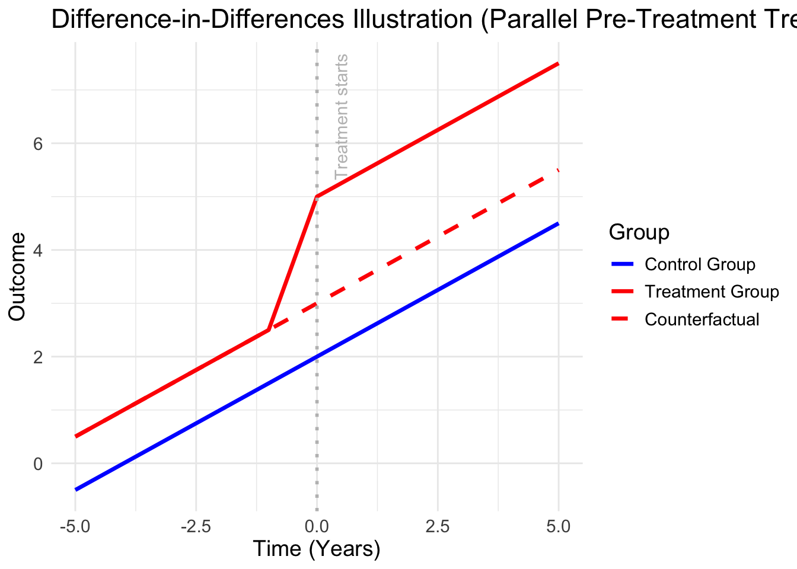
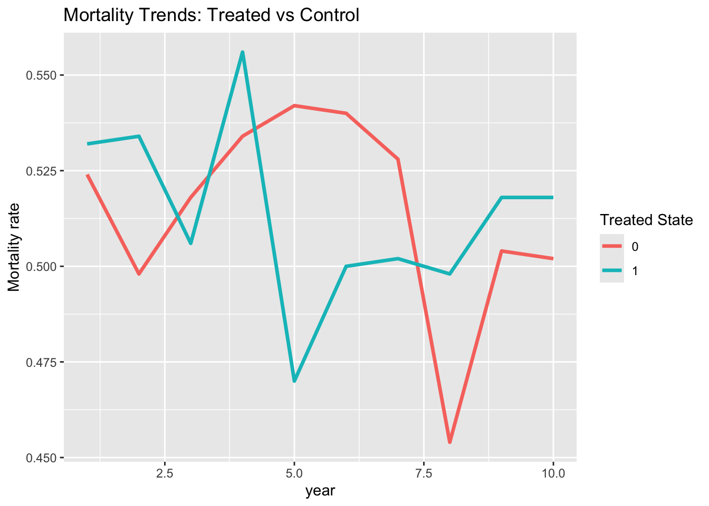

Warning: Using `size` aesthetic for lines was deprecated in ggplot2 3.4.0.
ℹ Please use `linewidth` instead.
So far, we have seen how to describe variables using descriptive statistics, as well as different statistical techniques to study relationships between variables, depending on their type (categorical or continuous). We have seen that linear regressions are useful for describing the relationship between a continuous dependent variable and either categorical or continuous independent variables, and that logistic regressions are useful for characterising binary outcomes.
In the exercises from the last class, regressions allowed us to describe correlations between variables—that is, associations. However, these regressions do not, in general, allow us to identify causal relationships. Important variables that drive the observed effect may be omitted, leading to biased estimates or spurious correlations.
Moreover, regression-based approaches often rely heavily on the researcher’s choices regarding which variables to include. This introduces a degree of arbitrariness. Consider the following example: if 99% of heroin users previously consumed cannabis, can we conclude that cannabis use causes heroin use? Clearly not—after all, 100% of heroin users have also consumed milk. This illustrates that simple associations are not sufficient to establish causality.
That explains why in fields such as policy analysis, medicine, and political science, there is a growing interest in statistical methods that aim to identify causal relationships between variables. A causal question is inherently counterfactual: it asks what would have happened in a different scenario. For instance, what would have happened to an individual if they had not received a treatment?
Causal analysis is therefore much more demanding than simple regressions. It requires stronger assumptions and careful research design. Causal inference addresses a specific type of research question. Some sociological approaches, especially more constructivist ones, question the very idea that variables can be cleanly isolated or that causal relationships exist independently “out there” in the world. In such perspectives, the goal may instead be to understand how variables are interconnected and how they jointly produce meaning through a chain of associative relationships.
There are several key approaches to causal inference designed to reduce bias. One of the most intuitive (and, arguably, convincing) is the difference-in-differences design. The empirical approach used to uncover a causal effect is referred to as an identification strategy.
In the next sessions, we will study two additional identification strategies: instrumental variables and regression discontinuity. These methods all rely on regression techniques, which is why the previous classes focused on building a solid understanding of regression analysis.
The intuition behind difference-in-differences (DiD) is quite simple: it involves tracking two groups over time—one that receives a treatment (e.g., a policy intervention) and one that does not.
The group that receives the treatment is called the treatment group.
The group that does not receive the treatment is called the control group.
By comparing the changes in outcomes over time between these two groups, we can estimate the effect of the treatment. The key idea is to compare the observed change in the treatment group with the counterfactual scenario—what would have happened to the treatment group if it had not received the treatment.
In practice, the counterfactual is often derived from the parallel trends assumption, which posits that, in the absence of treatment, the treatment and control groups would have followed similar trends before the intervention. If this assumption holds, any divergence in trends after the treatment can be attributed to the treatment itself.
Warning: Using `size` aesthetic for lines was deprecated in ggplot2 3.4.0.
ℹ Please use `linewidth` instead.
This is summarised on this figure, which shows the evolution of the outcome in two different groups, affected by the treatment in year 0. Before being affected by the treatment, the two groups evolve in parallel : yet, once the treatment is introduced, a new gap emerges between the groups. The dotted line shows the counterfactual, that is, under the parallel trends assumption, the evolution we would have expected for the treatment group, in the absence of treatment. The difference between that parallel counterfactual and the actual trend observed (in red), is the treatment effect.
Hence, the parallel trends assumption is the key requirement behind this causal method: it is only because we assume the counterfactual would have followed the control group’s trend that we can estimate the causal effect. As such, an estimation based on difference-in-differences is generally conducted in two phases : first, the estimation of the causal effect, then - as important as the first step -, the verification of the parallel trends.
Historically, the main estimator used for difference-in-differences estimations was the two-way fixed effects estimator (TWFE). It consists in computing :
\[\begin{equation} Y_{it} = \alpha_i + \beta_t + \text{Group_i} + \text{Period}_t + \delta \text{Group_i} \times \text{Period}_t + \espilon_{it} \end{equation}\] where \(\text{Group_i}\) and \(\text{Period}_t\) respectively equal to one for units \(i\) in the treatment group, and one for time periods \(t\) in post-treatment. \(\delta\) is the causal effect, also called ATT : average treatment effect on the treated (compared with the counterfactual of the treated). It is also possible to add covariates in that model \(X_{it}\), which generally do not modify the results.
Yet authors have recently shown that this method can lead to bias, especially when the treatment is staggered - that is, affecting multiple time periods -, or when it is heterogeneous (the effect is different depending on the characteristics of the treated units). Authors, such as De Chaisemartin or Callaway and Sant’Anna have therefore proposed alternative estimators, which are used in a very similar way as the TWFE.
THe
To introduce the idea behind causal estimation, consider the following example. Suppose we want to estimate the effect of Medicare on mortality rates : did the introduction of Medicare change the mortality rates or not ? This example is inspired from Miller et al., 2021. To do so, you can use made up data, downloaded here. For each individual \(i\), in state \(s\), time \(t\) you observe:
From what we have seen so far, a natural approach might be to run a simple OLS regression of the form:
\[\begin{equation} \text{Mortality}_i = \alpha + \beta \text{Medicare}_i + \epsilon_i, \end{equation}\]
Where you basically estimate the relationship between medicare and mortality through so-called Linear Probability Model : a type of OLS regression applied to binary dependent variables, that gives you an approximation of the predicted probabilities (a better version would be to consider the logistic regression instead). Here, your dependent variable would be the mortality variable, worth 0 in case the person is not dead, and 1 in case the person is dead. Your potential outcomes would therefore be 0 or 1, and your groups would be either treated or not treated.
Call:
lm(formula = mortality ~ medicare, data = data)
Residuals:
Min 1Q Median 3Q Max
-0.5166 -0.5166 0.4834 0.4834 0.4911
Coefficients:
Estimate Std. Error t value Pr(>|t|)
(Intercept) 0.516615 0.006200 83.33 <2e-16 ***
medicare -0.007758 0.010480 -0.74 0.459
---
Signif. codes: 0 '***' 0.001 '**' 0.01 '*' 0.05 '.' 0.1 ' ' 1
Residual standard error: 0.4998 on 9998 degrees of freedom
Multiple R-squared: 5.482e-05, Adjusted R-squared: -4.52e-05
F-statistic: 0.5481 on 1 and 9998 DF, p-value: 0.4591Yet this regression would only give you the association between the two, and you might get that, without controlling for other factors, the effect of Medicare is positive on mortality ! Indeed, not adding any other control, you might have omitted variable bias, leading to a positive correlation between the two, because people receiving medicare are already those more prone to suffering from diseases.
Call:
lm(formula = mortality ~ medicare + age + health + income, data = data)
Residuals:
Min 1Q Median 3Q Max
-0.5526 -0.5130 0.4589 0.4858 0.5262
Coefficients:
Estimate Std. Error t value Pr(>|t|)
(Intercept) 6.870e-01 6.694e-02 10.264 < 2e-16 ***
medicare -1.769e-03 1.082e-02 -0.164 0.87011
age -2.696e-03 9.767e-04 -2.760 0.00579 **
health -5.200e-04 2.459e-03 -0.211 0.83253
income 3.038e-07 5.041e-07 0.603 0.54673
---
Signif. codes: 0 '***' 0.001 '**' 0.01 '*' 0.05 '.' 0.1 ' ' 1
Residual standard error: 0.4997 on 9995 degrees of freedom
Multiple R-squared: 0.000853, Adjusted R-squared: 0.0004531
F-statistic: 2.133 on 4 and 9995 DF, p-value: 0.07399That is why you might then add control variables, like age, health, income etc, and run your regression again.
Attaching package: 'dplyr'The following objects are masked from 'package:stats':
filter, lagThe following objects are masked from 'package:base':
intersect, setdiff, setequal, uniondata %>%
group_by(treated_state, post) %>%
summarise(mean_mortality = mean(mortality), .groups = "drop")# A tibble: 4 × 3
treated_state post mean_mortality
<int> <int> <dbl>
1 0 0 0.513
2 0 1 0.515
3 1 0 0.524
4 1 1 0.509This method of causal estimation would lead to different potential critiques.
First, there is a fundamental problem of selection bias. Medicare coverage is not randomly assigned. In the United States, eligibility is largely determined by age (65 and above) and, in some cases, by disability status. As a result, individuals on Medicare are, on average, older and in worse health than those who are not covered. Since both age and health status are strongly correlated with mortality, the regression will confound the effect of Medicare with these underlying differences. This could lead to the misleading conclusion that Medicare increases mortality, simply because its beneficiaries are more likely to die.
Second, omitted variable bias is a major concern. Even if the researcher includes several control variables, it is unlikely that all relevant determinants of both Medicare enrollment and mortality are observed. Factors such as underlying health conditions, lifetime income, access to healthcare prior to eligibility, or health-related behaviors (e.g., smoking, diet) may be imperfectly measured or entirely unobserved. If these factors influence both treatment and outcome, the estimated coefficient on Medicare will be biased.
Third, there may be issues of reverse causality. In some cases, individuals qualify for Medicare through disability pathways. This means that poor health can increase the likelihood of receiving Medicare, rather than Medicare affecting health. In such situations, the direction of causality is blurred, and a simple regression cannot disentangle the relationship.
Fourth, the OLS framework imposes a homogeneous treatment effect: it assumes that Medicare has the same impact on mortality for all individuals. In reality, the effect is likely heterogeneous. For instance, Medicare may have a larger impact on low-income or high-risk individuals than on healthier populations. A single coefficient averages over these potentially very different effects.
Fifth, researchers may inadvertently include bad controls—variables that are themselves affected by Medicare, such as the number of doctor visits or hospitalizations. Controlling for such variables blocks part of the causal mechanism through which Medicare operates, leading to biased (typically underestimated) effects.
Sixth, there are timing issues to consider. Mortality is a dynamic outcome, and the effects of Medicare may take time to materialize. Moreover, individuals may enroll in Medicare shortly before death, which can create misleading correlations between coverage and mortality.
Finally, measurement issues may arise. A simple binary indicator for Medicare coverage does not capture differences in duration of enrollment, quality of coverage, or actual healthcare utilization. Such measurement error can further bias the estimated relationship.
More fundamentally, the regression estimates a conditional association—how mortality differs between those with and without Medicare. However, the causal question of interest is counterfactual: what would happen to mortality if individuals were given Medicare coverage? These are not the same object.
For all these reasons, a simple OLS regression with a treatment dummy does not provide a credible estimate of the causal effect of Medicare on mortality. To answer this question properly, one needs a valid identification strategy, such as regression discontinuity (exploiting the age 65 eligibility threshold), difference-in-differences, or instrumental variables. These approaches aim to approximate a randomized experiment and isolate exogenous variation in treatment, allowing for a more credible causal interpretation.
Hence, your treated units might still have characteristics that are not controlled for, and that also condition the outcome. In order to control for these characteristics, the difference-in-differences estimator controls for these fixed characteristics, by using the temporal variation in the introduction of the treatment. The canonical two-way fixed effects is written as :
Call:
lm(formula = mortality ~ treated_state * post, data = data)
Residuals:
Min 1Q Median 3Q Max
-0.5240 -0.5133 0.4760 0.4867 0.4911
Coefficients:
Estimate Std. Error t value Pr(>|t|)
(Intercept) 0.513333 0.012907 39.772 <2e-16 ***
treated_state 0.010667 0.018253 0.584 0.559
post 0.001524 0.015427 0.099 0.921
treated_state:post -0.016667 0.021817 -0.764 0.445
---
Signif. codes: 0 '***' 0.001 '**' 0.01 '*' 0.05 '.' 0.1 ' ' 1
Residual standard error: 0.4999 on 9996 degrees of freedom
Multiple R-squared: 9.836e-05, Adjusted R-squared: -0.0002017
F-statistic: 0.3278 on 3 and 9996 DF, p-value: 0.8053
Call:
lm(formula = mortality ~ treated_state * post + age + health +
income, data = data)
Residuals:
Min 1Q Median 3Q Max
-0.5555 -0.5129 0.4582 0.4854 0.5297
Coefficients:
Estimate Std. Error t value Pr(>|t|)
(Intercept) 6.980e-01 7.033e-02 9.925 < 2e-16 ***
treated_state 1.053e-02 1.830e-02 0.576 0.56493
post 1.665e-02 1.632e-02 1.020 0.30758
age -3.047e-03 1.060e-03 -2.874 0.00406 **
health -4.171e-04 2.466e-03 -0.169 0.86568
income 3.090e-07 5.044e-07 0.613 0.54009
treated_state:post -1.667e-02 2.181e-02 -0.764 0.44479
---
Signif. codes: 0 '***' 0.001 '**' 0.01 '*' 0.05 '.' 0.1 ' ' 1
Residual standard error: 0.4997 on 9993 degrees of freedom
Multiple R-squared: 0.000957, Adjusted R-squared: 0.0003572
F-statistic: 1.595 on 6 and 9993 DF, p-value: 0.144did_fe <- lm(mortality ~ treated_state * post + factor(state) + factor(year), data = data)
summary(did_fe)
Call:
lm(formula = mortality ~ treated_state * post + factor(state) +
factor(year), data = data)
Residuals:
Min 1Q Median 3Q Max
-0.5686 -0.5136 0.4484 0.4861 0.5414
Coefficients: (2 not defined because of singularities)
Estimate Std. Error t value Pr(>|t|)
(Intercept) 0.517267 0.023090 22.402 <2e-16 ***
treated_state 0.025667 0.027075 0.948 0.343
post -0.009667 0.024876 -0.389 0.698
factor(state)1 -0.007000 0.022357 -0.313 0.754
factor(state)2 -0.008000 0.022357 -0.358 0.720
factor(state)3 -0.020000 0.022357 -0.895 0.371
factor(state)4 0.010000 0.022357 0.447 0.655
factor(state)5 -0.013000 0.022357 -0.581 0.561
factor(state)6 0.006000 0.022357 0.268 0.788
factor(state)7 0.026000 0.022357 1.163 0.245
factor(state)8 -0.015000 0.022357 -0.671 0.502
factor(state)9 NA NA NA NA
factor(year)2 -0.012000 0.022357 -0.537 0.591
factor(year)3 -0.016000 0.022357 -0.716 0.474
factor(year)4 0.035000 0.022357 1.566 0.117
factor(year)5 -0.004000 0.022357 -0.179 0.858
factor(year)6 0.010000 0.022357 0.447 0.655
factor(year)7 0.005000 0.022357 0.224 0.823
factor(year)8 -0.034000 0.022357 -1.521 0.128
factor(year)9 0.001000 0.022357 0.045 0.964
factor(year)10 NA NA NA NA
treated_state:post -0.016667 0.021818 -0.764 0.445
---
Signif. codes: 0 '***' 0.001 '**' 0.01 '*' 0.05 '.' 0.1 ' ' 1
Residual standard error: 0.4999 on 9980 degrees of freedom
Multiple R-squared: 0.001599, Adjusted R-squared: -0.0003013
F-statistic: 0.8415 on 19 and 9980 DF, p-value: 0.658library(ggplot2)
data %>%
group_by(year, treated_state) %>%
summarise(mortality = mean(mortality), .groups = "drop") %>%
ggplot(aes(x = year, y = mortality, color = factor(treated_state))) +
geom_line(size = 1.2) +
labs(color = "Treated State",
title = "Mortality Trends: Treated vs Control",
y = "Mortality rate")